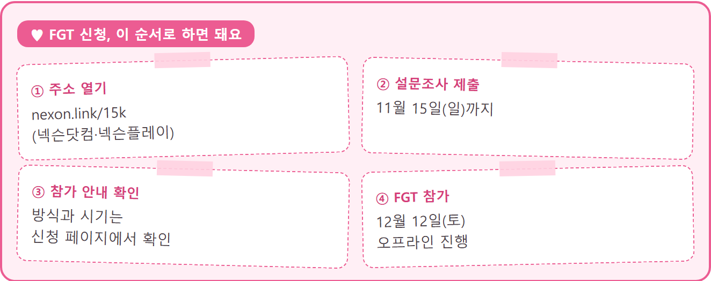

테일즈위버 모바일 FGT 참가자 모집 신청방법 일정 총정리
11월 6일 넥슨이 신작 모바일 MMORPG '테일즈위버 모바일'을 처음 공개하면서 FGT 참가자 모집도 같이 시작했어요. 공식 영상과 기사가 같은 날 한꺼번에 나온 터라 정보가 여기저기 흩어져 있는데요, 신청 방법과 일정부터 추려서 정리해 봤습니다. 11월 6일 기준으로 신청 마감은 보도상 11월 15일이라 마감까지 9일 남았어요.
옛 PC 온라인 '테일즈위버'의 감성을 모바일로 새롭게 그린 게임이라 관심 가지신 분들 많으시죠? 이번 FGT가 그 첫 테스트 자리거든요. 놓치기 전에 순서대로 짚어 볼게요.

넥슨이 공개한 이미지예요. 모닥불 앞에 두 캐릭터가 앉아 있어요
사진=넥슨 · 이미지 출처: 인벤 보도 · 네이버 본문엔 받아서 재업로드 권장
테일즈위버 모바일 FGT는 언제 열리고 언제까지 신청하나요
테일즈위버 모바일 FGT는 12월 12일 토요일에 열리고, 참가 신청은 아이뉴스24·디지털투데이 보도에 따르면 11월 15일 일요일까지 받아요. 오프라인으로 진행되는 FGT라는 점도 눈여겨보실 만한데요, 인벤 보도와 넥슨 공식 영상 제목('오프라인 FGT 모집 중')에 그렇게 나와 있거든요.
| 구분 | 내용 |
|---|---|
| 신청 마감 | 11월 15일(일) · 마감까지 9일 |
| FGT 일자 | 12월 12일(토) · 36일 남음 |
| 참가 안내 발표 | 11월 6일 기사에는 아직 없어요 · 신청 페이지 안내문에서 확인 |
마감이 일요일이라 주말에 몰아서 하려다 놓치기 쉬운데요ㅎㅎ 저라면 평일 안에 설문부터 내 둘 것 같아요. 신청은 11월 15일까지, FGT는 그보다 한 달 가까이 뒤라서 두 날짜를 헷갈리지 않는 게 중요하거든요.
테일즈위버 모바일 FGT 신청 방법, 어디서 어떻게 하나요
FGT 신청은 넥슨닷컴이나 넥슨플레이에서 설문조사를 제출하는 방식이고, nexon.link/15k 주소로 들어가면 신청 설문으로 바로 연결돼요. 순서는 링크 열기, 설문 제출, 참가 안내 확인, 12월 12일 FGT 참가 순이에요.

'FGT 신청하기' 문구가 들어간 넥슨의 안내 이미지예요
사진=넥슨 · 이미지 출처: 디지털투데이 보도 · 네이버 본문엔 받아서 재업로드 권장

신청 설문 첫 화면이에요
테일즈위버 모바일은 어떤 게임이고 FGT에서 뭘 보나요
테일즈위버 모바일은 넥슨이 이번에 처음 공개한 모바일 MMORPG로, 옛 PC 온라인 '테일즈위버'의 분위기를 새로 풀어낸 게임이에요. 이번 FGT에서 중점적으로 살펴볼 부분은 대략 아래와 같다고 해요(지디넷코리아·아이뉴스24 보도).
- 원작의 감성을 담은 비주얼
- 스토리
- 전투 시스템
- 모바일 조작감

상점과 대장간이 이어진 마을 장면으로 공개된 이미지예요
사진=넥슨 · 이미지 출처: 인벤 보도 · 네이버 본문엔 받아서 재업로드 권장
참가자들이 남긴 의견은 이후 개발에 반영된다고 디지털투데이가 전했어요. 전투와 조작감이 특히 궁금하셨던 분들께는 직접 손으로 느껴 볼 수 있는 기회가 되겠네요.

캐릭터가 얼음 결정을 터뜨리며 몬스터 무리를 상대하는 전투 장면이에요
사진=넥슨 · 이미지 출처: 인벤 보도 · 네이버 본문엔 받아서 재업로드 권장
자주 묻는 질문
Q. FGT가 정확히 뭔가요?
FGT는 포커스 그룹 테스트의 줄임말로, 정식 출시 전에 일부 이용자를 모아 게임을 미리 해 보게 하고 의견을 듣는 테스트를 말해요. 그래서 완성판과는 다를 수 있답니다.
Q. 공개된 영상 속 화면 그대로 출시되나요?
공개 영상의 플레이 화면은 개발 중인 화면이라 출시 버전과 다를 수 있다고 해요. 이 글에 담은 이미지도 같은 기준으로 봐 주세요.
Q. 정식 출시일이나 지원 기기, 과금 방식은 나왔나요?
11월 6일 보도에는 나오지 않았어요. 모바일 게임이라는 것까지만 나왔고 출시일·iOS/안드로이드 구분·과금 방식은 보도에 없어요. 신청 페이지 안내문과 이후 공지에서 확인해 보세요. 새 소식이 나오면 이 글에 정리해 둘게요.
마감 전에 할 일은 하나예요
지금 할 일은 11월 15일 전에 신청 설문을 열어 보는 것 하나예요. 옛 테일즈위버의 모험을 모바일로 다시 만나고 싶으신 분들은 서둘러 신청해 보세요~
참고한 곳 (11월 6일 기준)
· 공식: 넥슨 FGT 참가 신청 설문 (nexon.link/15k)
· 테일즈위버 모바일 공식 영상 — 오프라인 FGT 모집 중
· 보도: 인벤 · 지디넷코리아 · 아이뉴스24 · 디지털투데이